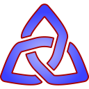

| Chapter 1. Knotter User Guide | ||
|---|---|---|
 |  | |
| Chapter 1. Knotter User Guide | ||
|---|---|---|
| | | |
Table of Contents
Interlace patterns are a kind of design hystorically used as a decorations in many places and by different cultures.
Knotter uses graphs to represent knots.
A good description of the algorithm used to render them and design tips can be found at Celtic Knotwork: the Ultimate Tutorial

An illumination on the cover of the Quran with an interlaced frame
See the Knotter man page
A knot is produced from a graph where the edges define interactions between two knot lines.
Double clicking on an empty spot on the drawing area will add a node. If you double click on an edge, the new node will split that edge in two.
Knotter supports three types of edge:
The two lines cross at the edge midpoint, one on top of the other
Like default but with the other line on top
The lines turn back without crossing
The lines follow the edge without crossing
From left to right: Default, Inverted, Hole, Wall
![[Tip]](img/tip.svg) | Tip |
|---|---|
The type of an edge is changed with the mouse wheel or with the edge context menu. |
Adding nodes and edges one at the time can be very tedious, knotter provides the tool to make this process easier.
When this is enabled, a single click will create a node and each new node is connected to the previous one by an edge.
To break the edge chain, click with the right button, you'll be able to start a new chain from the next node.
Only nodes can be selected and moved, the edges will follow their vertices.
A single node is selected by left clicking it, multiple nodes can be selected by holding Shift or Control.
Dragging the mouse from an empty spot will select the nodes within a rectangual area.
Dragging one of the selected nodes will move the selection, while moving nodes can be transformed using the mouse wheel (will scale the selection) or Shift + mouse wheel (will rotate the selection around the node under the cursor). These transformations are available when pasting nodes.
Selected nodes can be mirrored using the horizontal and vertical flip commands.
To allow precise designs knotter offers a grid that, when enabled, will snap nodes to the closest point.
There are three types of grid:
A regular square grid.
A grid where the elements are equilateral triangles with a horizontal base.
A grid where the elements are equilateral triangles with a vertical side.
The docks allow the configuration of display and shape options.
How much the knot line follows its direction when exiting from an edge.
Distance between the end points when a lines are crossing.
Minimum angle between two edge to make the knot line display a cuspid rather than a smooth curve.
Distance between the graph node and cusp tip
Various cuspid shapes
How the sharp points are rendered
Flat
With a sharp point
Smooth
| Tip |
|---|---|
Some style settings can be configured on individual nodes, using the contect menu (right click on a node) |
Solomon's knots and trefoils rendered using various styles
Style settings docks
Knotter can save and load knots in its own human-readable format.
The Export dialog gives many options to export the knot as Image
If is checked, Knotter will export only the shape of the knot as a thin line, discarding some style option. This is useful if you plan to edit the image with an external program as it will give more control on shape changes
If checked, the output image will be supersampled.
The compression level, the result depends on the exported format ( 0% will produce large, uncompressed files; 100% small files ).
When exporting to a JPEG image, heavy compression will result in poor quality.
This option in only meaningful for export format that support compression
The resulting image size, if they are different from the actual knot it will be scaled to fit those.
When enabled, editing Width/Height will preserve their ratio.
Change Width and Height back to the default.
Export dialog
| | | |
|  Knotter Manual |  | Chapter 2. Man pages |